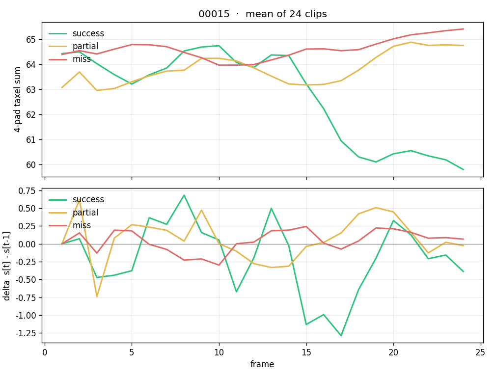
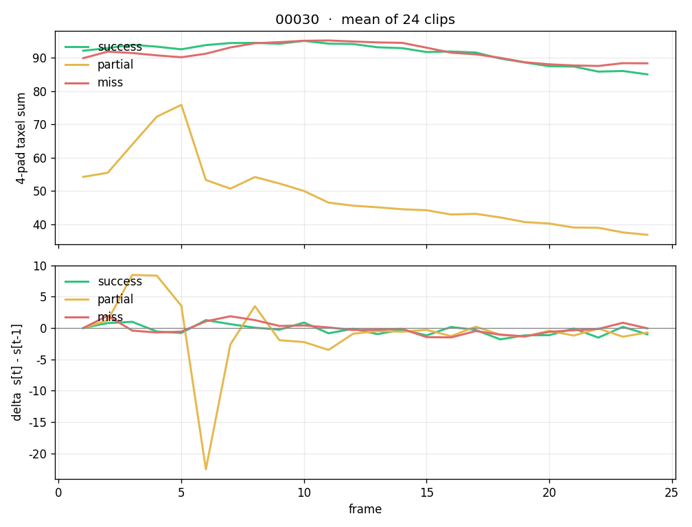
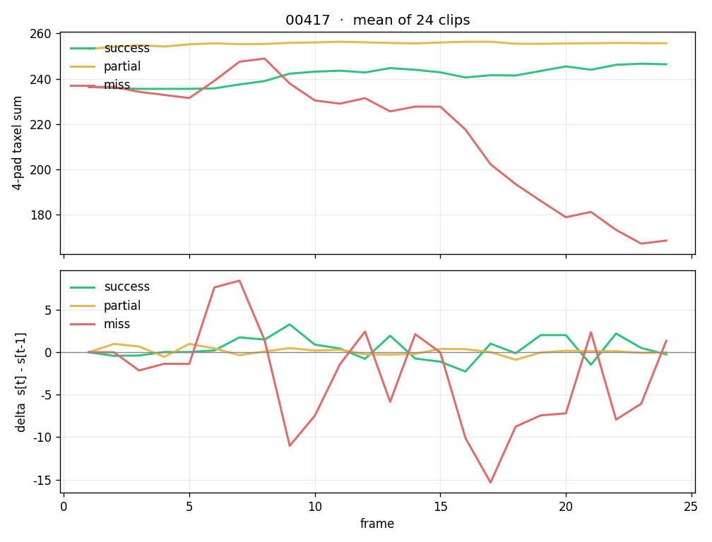
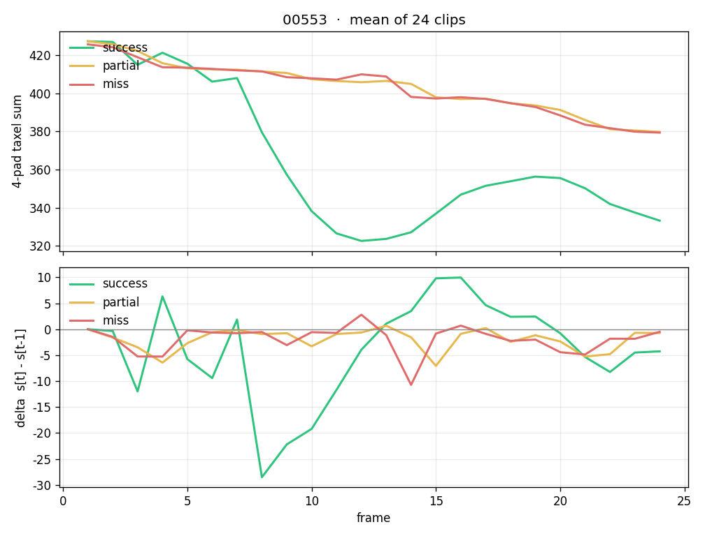

Task 00004
success peak 25.1 d 5.9 · partial peak 25.1 d 5.9 · miss peak 24.7 d 4.8

Scalar is the 4-pad taxel sum (same as dump tactile_sum). Top: mean level over 24 clips. Bottom: frame delta s[t]−s[t−1]. Training npz files were not rewritten.
success peak 25.1 d 5.9 · partial peak 25.1 d 5.9 · miss peak 24.7 d 4.8
success peak 138.7 d 5.7 · partial peak 115.5 d 3.7 · miss peak 136.1 d 3.4

success peak 32.0 d 10.0 · partial peak 30.4 d 9.1 · miss peak 32.3 d 9.1

success peak 66.0 d 3.1 · partial peak 65.1 d 0.9 · miss peak 65.7 d 0.7

success peak 26.7 d 5.4 · partial peak 24.5 d 1.6 · miss peak 23.8 d 5.1

success peak 50.3 d 3.3 · partial peak 50.5 d 2.3 · miss peak 50.2 d 2.8

success peak 96.3 d 6.4 · partial peak 76.1 d 24.1 · miss peak 95.5 d 5.5

success peak 804.0 d 58.0 · partial peak 752.1 d 22.0 · miss peak 754.6 d 17.9

success peak 52.6 d 2.5 · partial peak 52.4 d 1.1 · miss peak 53.9 d 2.1

success peak 72.8 d 2.6 · partial peak 85.7 d 0.8 · miss peak 72.1 d 1.8

success peak 244.2 d 41.8 · partial peak 247.7 d 8.5 · miss peak 242.6 d 61.4

success peak 50.6 d 6.6 · partial peak 49.6 d 3.5 · miss peak 50.7 d 4.3

success peak 71.2 d 8.0 · partial peak 67.6 d 3.2 · miss peak 73.4 d 7.5

success peak 21.5 d 7.8 · partial peak 25.4 d 3.3 · miss peak 20.7 d 3.2

success peak 95.7 d 26.7 · partial peak 95.3 d 0.8 · miss peak 97.6 d 2.0

success peak 271.5 d 36.3 · partial peak 374.2 d 4.4 · miss peak 259.1 d 6.9

success peak 166.2 d 5.3 · partial peak 164.8 d 3.2 · miss peak 165.5 d 3.1

success peak 54.8 d 8.5 · partial peak 54.7 d 7.0 · miss peak 55.2 d 9.8

success peak 59.2 d 2.7 · partial peak 21.4 d 0.7 · miss peak 55.2 d 1.6

success peak 64.3 d 1.1 · partial peak 100.6 d 0.7 · miss peak 64.5 d 0.8

success peak 218.4 d 81.6 · partial peak 222.6 d 73.9 · miss peak 221.4 d 71.4

success peak 30.3 d 4.4 · partial peak 24.5 d 0.9 · miss peak 26.1 d 2.1

success peak 113.0 d 3.9 · partial peak 112.1 d 2.9 · miss peak 112.4 d 2.8

success peak 5.1 d 2.1 · partial peak 7.1 d 1.9 · miss peak 5.5 d 2.6

success peak 201.9 d 83.8 · partial peak 113.5 d 2.5 · miss peak 197.3 d 59.0

success peak 101.5 d 2.4 · partial peak 85.0 d 1.1 · miss peak 102.5 d 1.7

success peak 34.3 d 1.8 · partial peak 34.4 d 1.0 · miss peak 34.2 d 1.0

success peak 21.0 d 5.3 · partial peak 21.0 d 2.7 · miss peak 20.9 d 3.0

success peak 253.4 d 17.4 · partial peak 257.5 d 3.1 · miss peak 258.3 d 60.7

success peak 99.8 d 2.8 · partial peak 100.1 d 1.3 · miss peak 99.4 d 1.3

success peak 80.8 d 3.0 · partial peak 80.0 d 0.9 · miss peak 79.9 d 0.7

success peak 333.3 d 26.6 · partial peak 333.0 d 26.8 · miss peak 333.3 d 25.1

success peak 51.5 d 3.9 · partial peak 52.8 d 5.4 · miss peak 52.6 d 2.2

success peak 88.7 d 3.1 · partial peak 87.9 d 1.7 · miss peak 88.4 d 1.4

success peak 77.1 d 5.5 · partial peak 74.7 d 2.6 · miss peak 76.9 d 2.5

success peak 445.2 d 112.3 · partial peak 427.4 d 7.5 · miss peak 425.8 d 11.3

success peak 302.4 d 66.9 · partial peak 285.5 d 39.2 · miss peak 289.1 d 40.6

success peak 20.9 d 2.5 · partial peak 20.7 d 1.6 · miss peak 21.0 d 1.6

success peak 32.5 d 1.4 · partial peak 32.8 d 1.2 · miss peak 31.5 d 1.8

success peak 69.9 d 2.5 · partial peak 101.1 d 0.8 · miss peak 69.3 d 0.8

success peak 60.8 d 11.0 · partial peak 55.9 d 1.1 · miss peak 57.2 d 2.3

success peak 65.7 d 8.1 · partial peak 64.4 d 4.6 · miss peak 69.1 d 21.7

success peak 26.5 d 1.8 · partial peak 26.5 d 1.7 · miss peak 26.6 d 1.6

success peak 147.5 d 6.6 · partial peak 146.4 d 3.0 · miss peak 145.5 d 5.3

success peak 64.7 d 3.5 · partial peak 63.2 d 3.0 · miss peak 64.7 d 3.5

success peak 49.2 d 2.5 · partial peak 49.8 d 2.0 · miss peak 49.0 d 1.7

success peak 116.5 d 5.4 · partial peak 120.2 d 4.8 · miss peak 125.1 d 33.8

success peak 89.5 d 5.9 · partial peak 83.9 d 0.6 · miss peak 84.5 d 1.8

success peak 83.9 d 3.7 · partial peak 78.8 d 5.4 · miss peak 80.3 d 2.2

success peak 41.3 d 2.5 · partial peak 39.9 d 2.1 · miss peak 41.1 d 2.7

success peak 109.4 d 3.7 · partial peak 109.7 d 3.3 · miss peak 108.9 d 3.6